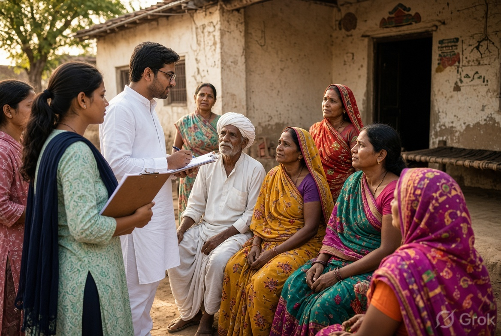
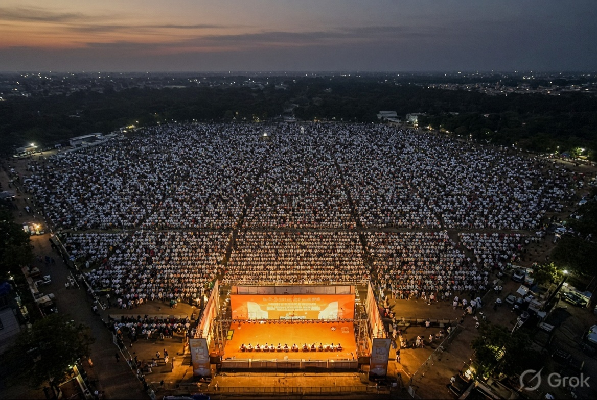
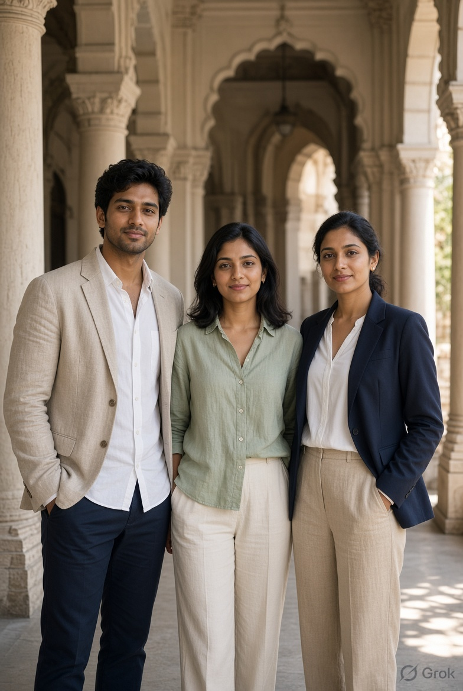

01
Citizen agenda
Listening yatras, issue heatmaps and guarantee cards. We turn kitchen-table demand into a governing document a household can remember.
भारत · Political Consulting
Lokniti is an India-centric political consulting house. We help visionary leaders write citizen-first guarantees, take them booth by booth, and turn public hunger into a governing mandate.
The Lokniti Story
India does not lack slogans. It lacks agendas that survive the last mile — from a manifesto draft to a ration shop, a mohalla sabha, a polling booth.
Lokniti was built as a professional home for students and young practitioners who want to shape political affairs and governance without first joining a party. We partner only with leaders who already have a public record — and we hold them to a citizen-centric brief.
Our work sits at the join of three crafts: listening at scale, designing a guarantee people can repeat, and running the field machine that makes that guarantee feel inevitable.

Practice areas
Not a creative shop with a war-room sticker. A political operating system — research, narrative, field, data, and media — built for Indian elections.
Listening yatras, issue heatmaps and guarantee cards. We turn kitchen-table demand into a governing document a household can remember.
Booth committees, padyatras, townhalls, mohalla sabhas and door-to-door grids. Infantry first. Spectacle second.
Constituency graphs, caste-community overlays, turnout models and daily tracker rooms. Precision without losing the street.
Language that travels in Hindi, Tamil, Telugu, Bangla and more. Songs, walls, reels, press and the evening bulletin — one spine.
Creator networks, war-room content factories, WhatsApp graphs and rapid response. The phone is a booth now.
Day-one dashboards, scheme design and public delivery theatre so a win does not evaporate after the oath.
Selected theatres
Composite case files drawn from the kind of India-wide campaigns Lokniti is built to run. Names of living office-holders are withheld on this public site.

A dusk ground, a single promise, a city that arrived on time.
Every assembly broken to booth, caste, turnout and last-mile deficit.
Signed memorandums, not focus-group theatre.
North
A 40-day listening spine across mandis and canal belts. Loan stress, MSP honesty and input cost became one card.
East
Governance brought to the courtyard — pensions, ration corrections, women’s income and school grants in one queue.
South
A seven-pledge document unveiled as a civic event, then drilled into every ward with language that sounded like home.
How a mandate is made
Indian elections punish decoration. They reward organisations that can listen, name, saturate and count.
Booth walks, caste-community maps, women-only rooms, farmer ledgers. We do not invent the brief in a hotel.
Seven to fifteen guarantees. Prices, pensions, school, clinic, dignity. Language that a grandmother can repeat.
Wall, song, reel, rath, booth committee, creator, cable. One spine. A hundred textures.
Last-72-hour rooms, missing-voter lists, women and first-time voters. Victory is an operations problem.
Footprint

Yuvalaya
Yuvalaya is Lokniti’s fellowship for students and early-career professionals — IITs, IIMs, NLUs, central universities and the quiet colleges that actually staff a booth.
Offices
Mandi House corridor · National campaigns, media, parliament brief
Banjara Hills · Data, product, South & Deccan operations
Salt Lake · East & field academy
Media · press@lokniti.in
General · hello@lokniti.in
+91 11 4155 2400